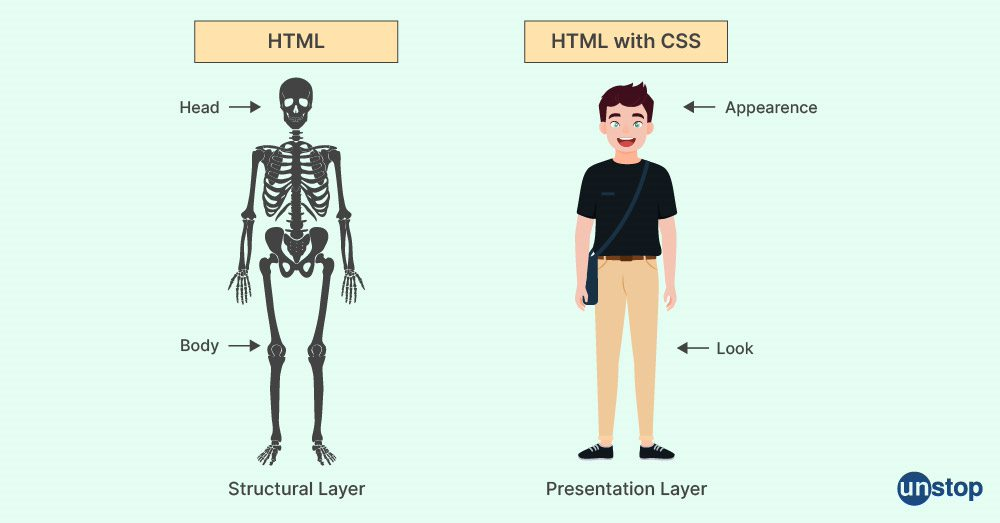
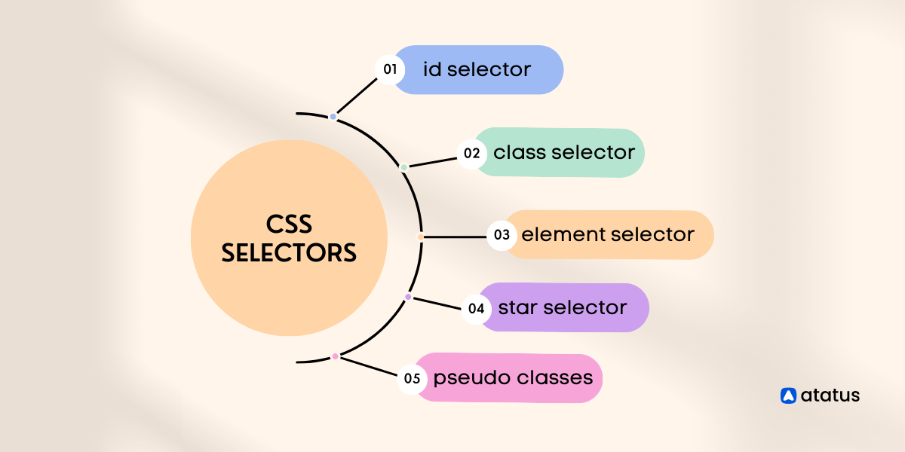
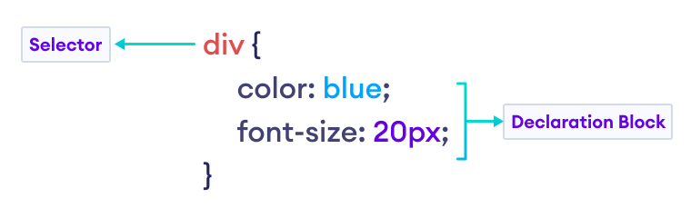

Intro
^
Yesterday we talked about HTML, the Hyper-Text Markup Language that’s responsible for the structure of our websites
^
Today we’re going to talk about CSS, which is the language used to style websites
^

Objective
^
After this lesson you will know three distinct characteristics of CSS
What is CSS
^
CSS stands for Cascading Style Sheets
^
CSS is a rules-based language used to apply styles to HTML elements or groups of elements
^
What do we mean by a rules based language? Any ideas?
^
Interpretation of rules, written with correct syntax, to match blocks of CSS with HTML elements
^
Within our rules based language, we have ’selectors’, ’properties’, ’syntax’, ’rules’
What are CSS Selectors
^
CSS selectors are key words we arrange and write in our CSS documents, that tell the browser to target specific HTML elements
^
body {
background-color: #fff;
color: #120300;
font-family: arial, verdana, helvetica, sans-serif; //web-safe fonts, sans-serif
font-size:12px;
line-height:1.5;
background-image: url("scenic-background.jpg");
background-repeat: no-repeat;
background-size:100%;
}
^

^ ID selector
#id-attribute-name {
}
^ Class Selector
.class-attribute-name {
}
^ Element
html {
}
^ Star Selector
\* {
}
^ Psuedo Classes
div:hover {
}
CSS Syntax

CSS Background

Question 1
^
Between HTML and CSS, which language is for structure and which language is for style?
^
HTML is for Structure, CSS is for style
Question 2
^
Is CSS a markup language or a rules based language?
^
CSS is a rules-based language where you define rules to apply styles to HTML elements or groups of elements
Question 3
^
Where does the browser get the CSS from?
^
Acceptable answers:
- From a stylesheet
- From the HTML document
- From the style attribute
- From the style tag
- From JavaScript
Summary
^
In this lesson we introduced CSS, discussed how CSS is used to style website and HTML is used to structure websites.
^
We then introduced the concept of CSS selectors, and looked at 5 key types of CSS selectors. Next, we introduced CSS properties and syntax.
^
Finally, we answered three questions about characteristics of CSS